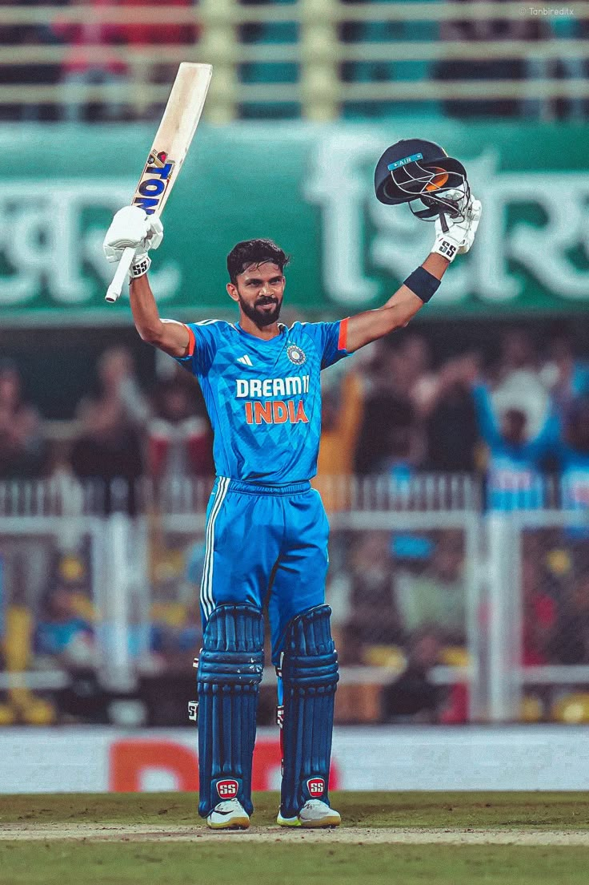

THALA DHONI
he is the most popular player in the world being an cricket player he is also an army officer.In the Indian Premier League (IPL), Dhoni plays for Chennai Super Kings (CSK), leading them to the final on ten occasions and winning it five times (2010, 2011, 2018, 2021 and 2023). He has also led CSK to two Champions League T20 titles in 2010 and 2014. Dhoni is among the few batsmen to have scored more than five thousand runs in the IPL, as well as being the first wicket-keeper to do so.

JADDU
Ravindrasinh Anirudhsinh Jadeja (born 6 December 1988) is an Indian cricketer who represents the national team in ODI and Test formats. He is an all-rounder, who bats left-handed and bowls left-arm orthodox spin. He is regarded as one of the best all-rounders of his generation, becoming the fifth Indian and fifth-fastest player to score 2,000 runs and take 200 wickets in Test cricket in 2021. Jadeja was the leading wicket-taker in the 2013 Champions Trophy and received the man of the match award as a member of the final-winning team.
RUTTU
Ruturaj Gaikwad (born 31 January 1997) is an Indian international cricketer who captains the Maharashtra cricket team in the T20, List A format and the current captain of Chennai Super Kings in the Indian Premier League (IPL).[3][4] He made his international debut for the India cricket team in July 2021 against Sri Lanka. He was the captain of the India squad which won the gold medal at the 2022 Asian Games. He was the leading run-scorer in the 2021 IPL season and also won emerging player of the season.
